Symbole absolu de la Seconde Guerre mondiale, la Jeep est née d’un concours lancé par l’armée américaine en 1940 pour créer un véhicule léger, rapide, robuste et capable d’évoluer sur tous les terrains. Conçue pour accompagner les soldats au plus près du front, elle devient rapidement un outil indispensable : reconnaissance, transport, communication, évacuation, commandement… la Jeep est partout.
De Bantam à Willys, en passant par Ford, son développement fulgurant donne naissance à l’un des véhicules militaires les plus emblématiques de l’Histoire, reconnu pour sa fiabilité, sa simplicité mécanique et sa capacité à franchir des obstacles que peu d’engins pouvaient affronter. Plus qu’un véhicule, la Jeep est devenue un symbole : celui de la mobilité, de la liberté et de l’efficacité militaire.
En juillet 1940, l’U.S. Army lance un appel d’offres pour un véhicule révolutionnaire. Le cahier des charges est extrêmement strict : un véhicule léger, rapide, robuste, capable de franchir tous les terrains, transportable par avion, et utilisable pour des dizaines de missions différentes.
En septembre 1940, trois constructeurs présentent leur prototype :
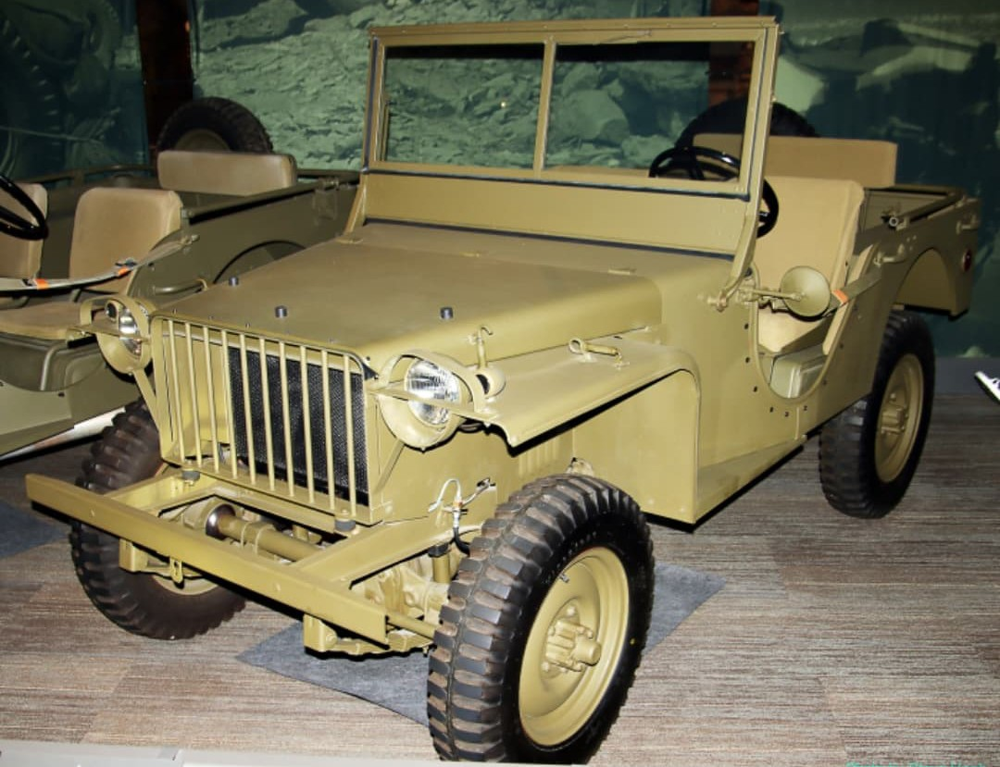
Le premier prototype. Ultra léger, très agile. Mais Bantam est trop petite pour produire en masse.
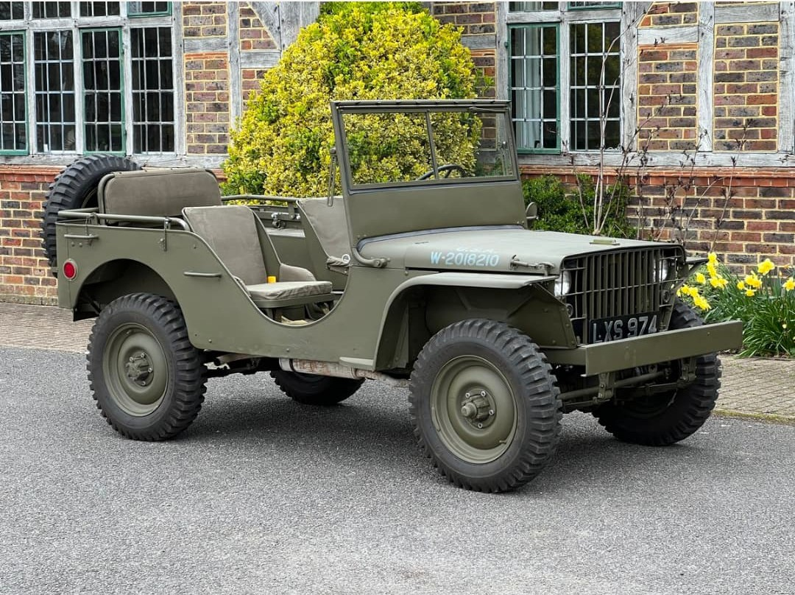
Prototype solide mais trop lourd. Ford sera choisi plus tard pour produire la Jeep sous licence.
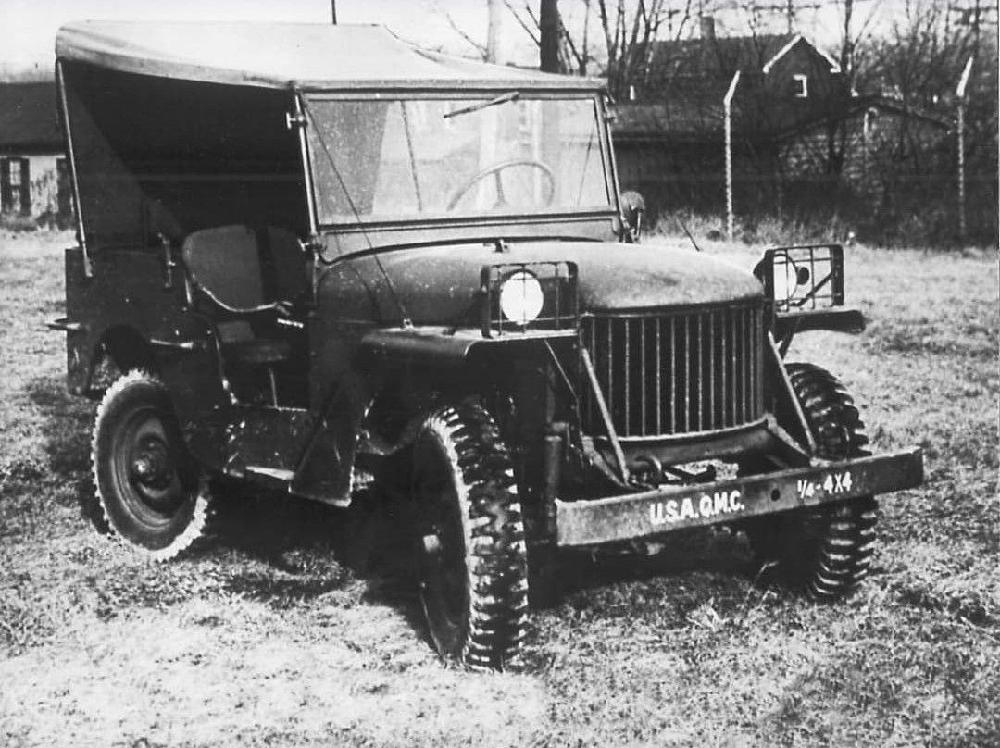
Moteur Go‑Devil imbattable. Robustesse supérieure. Gagnant officiel du concours.
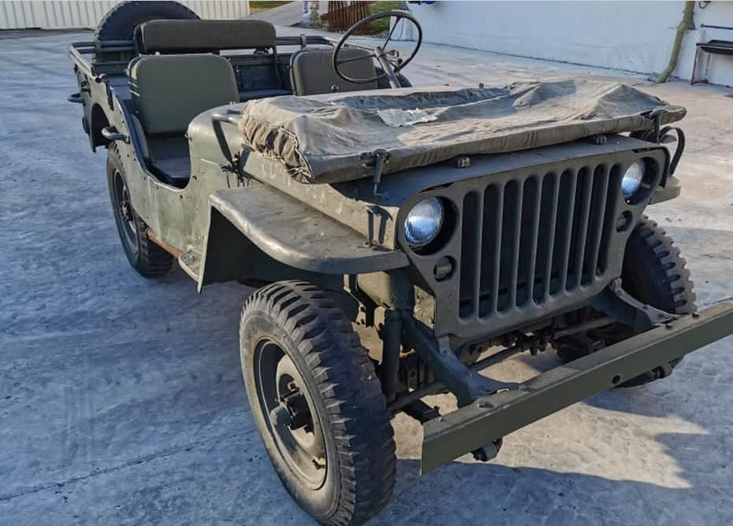
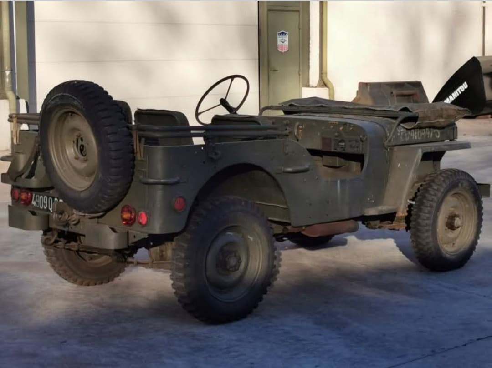
Willys remporte le concours grâce à son moteur Go‑Devil, puissant, fiable, capable de franchir tous les terrains. Le modèle évolue en Willys MB, la Jeep officielle de l’armée américaine.
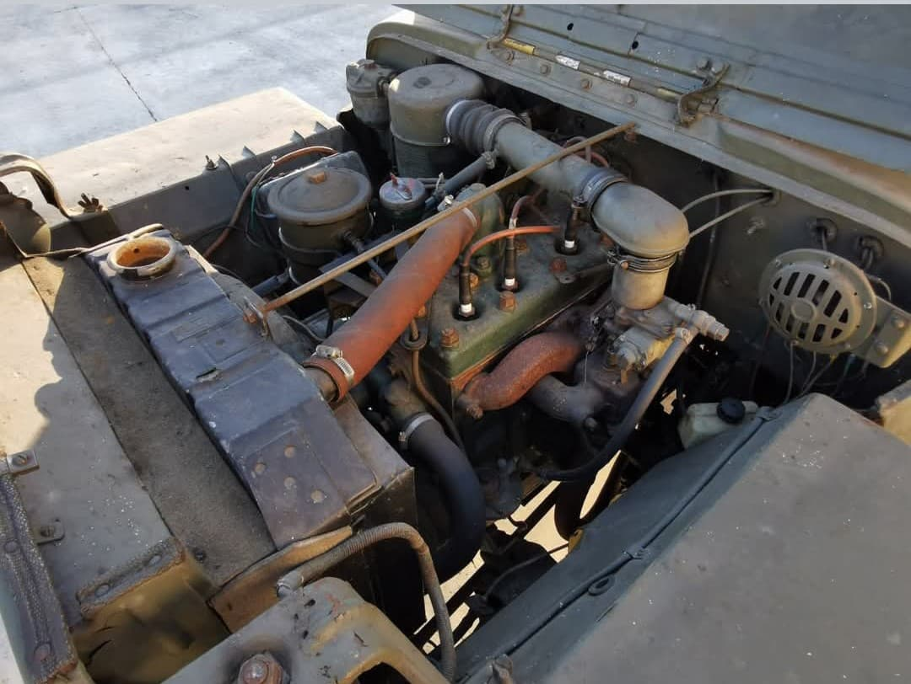
L’armée a besoin de dizaines de milliers de Jeep. Willys ne peut pas produire assez vite. L’U.S. Army ordonne donc à Ford de fabriquer le même modèle sous licence : la Ford GPW.
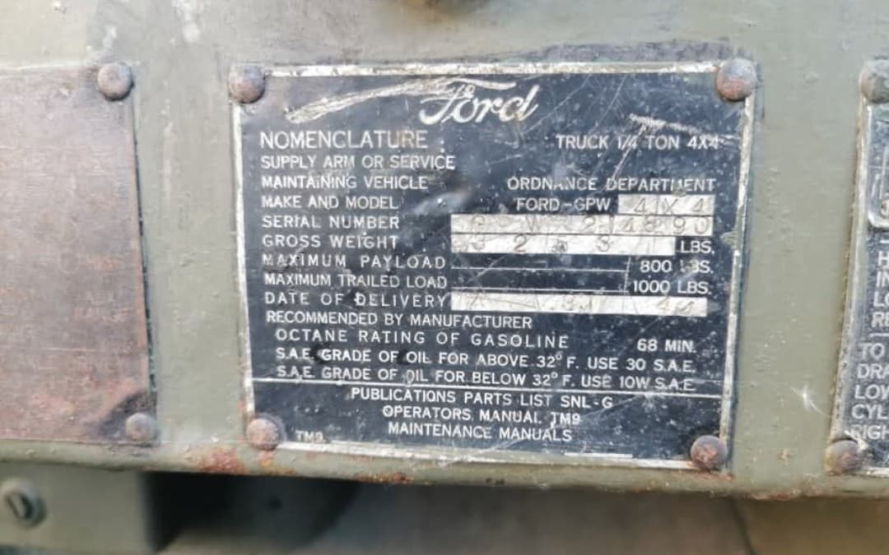
Les deux Jeep sont identiques : pièces interchangeables, performances identiques. Ford marque ses pièces d’un petit F (les fameux “F‑marks”).
La Jeep peut recevoir une grande variété d’équipements :
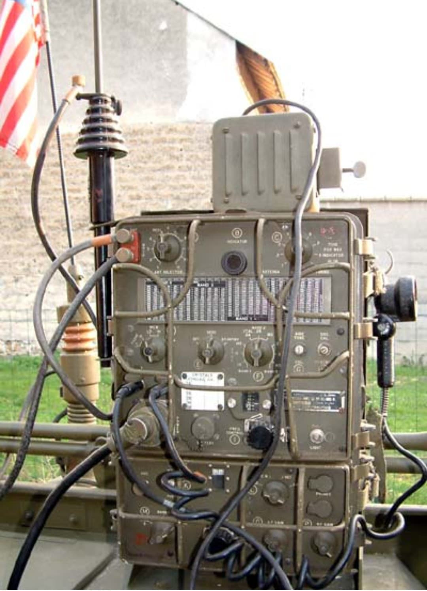
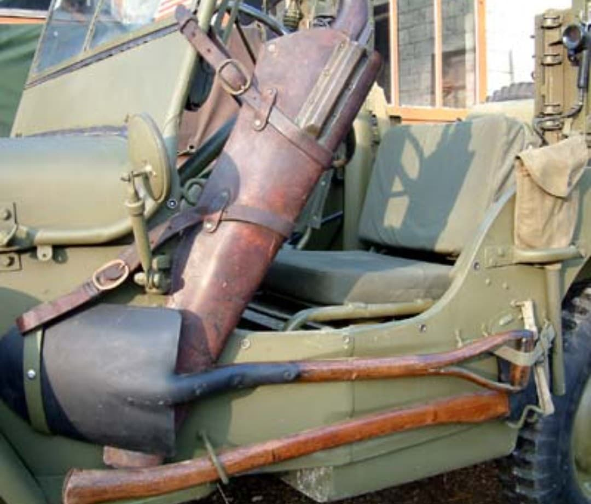
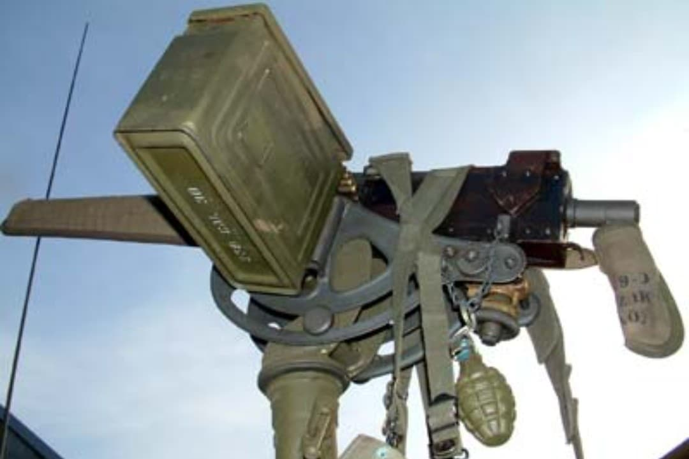
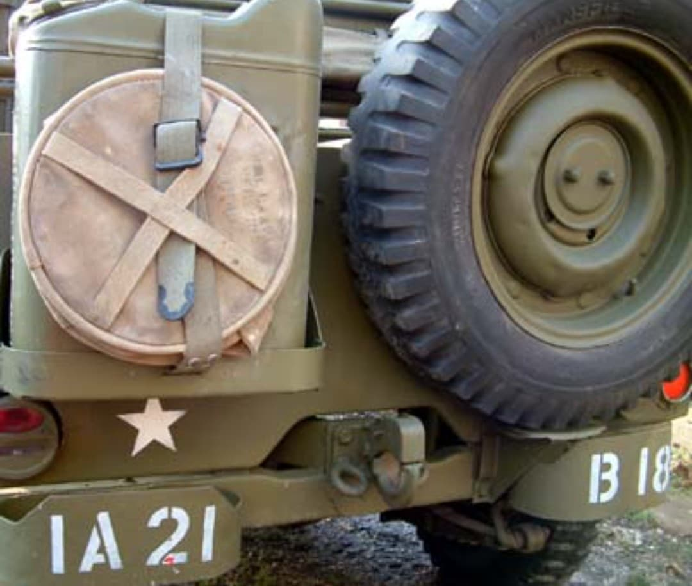
Pour faciliter le transport par bateau ou avion, la Jeep peut être livrée en kit, démontée dans une caisse. Les soldats la remontent en moins d’une heure sur le terrain.
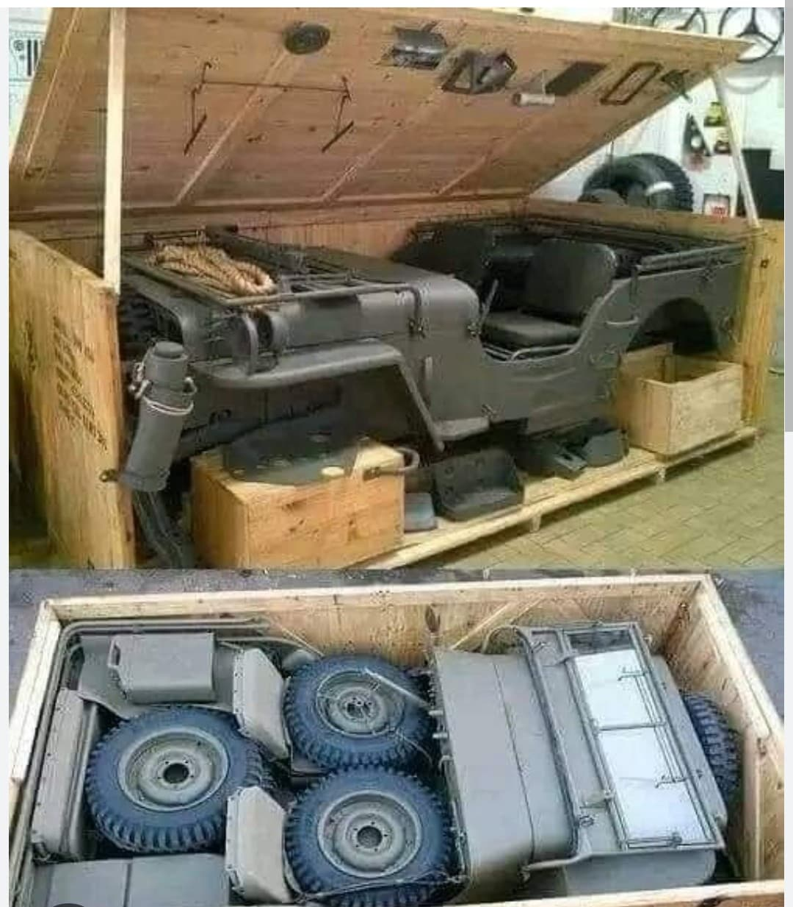
Dans les années 1930, Popeye introduit un personnage : Eugene the Jeep, un petit animal jaune magique capable de se téléporter et de passer partout. Les soldats américains, découvrant la nouvelle Jeep Willys MB, font immédiatement le parallèle :
« Elle passe partout comme le Jeep ! »
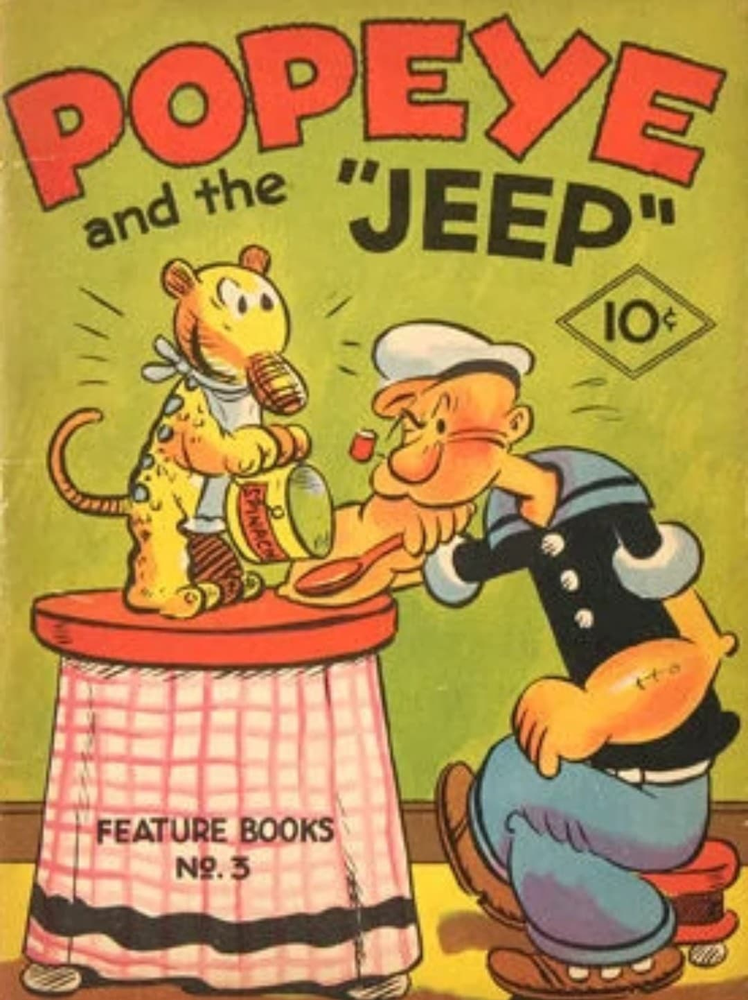
Aujourd’hui, Jeep est une grande entreprise mondiale appartenant au groupe Stellantis. La marque produit des 4x4 modernes comme le Wrangler, le Grand Cherokee, le Gladiator ou l’Avenger électrique, tout en conservant l’esprit du modèle militaire d’origine : robustesse, liberté et capacité à passer partout.
De simple véhicule de guerre, la Jeep est devenue une marque internationale majeure, reconnue dans le monde entier pour ses véhicules tout‑terrain.
Page du Musée HOP WW2 – Section Mur de Berlin & Guerre froide